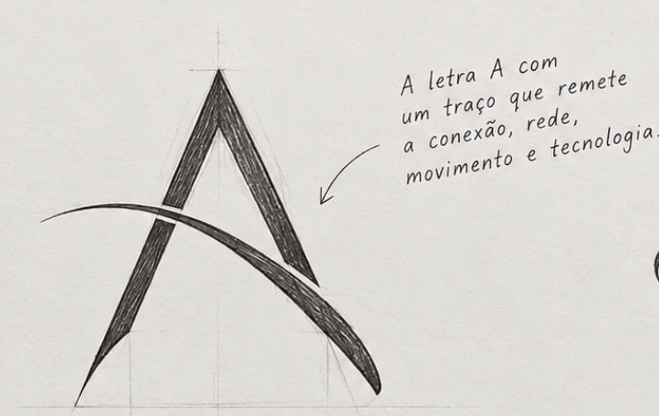
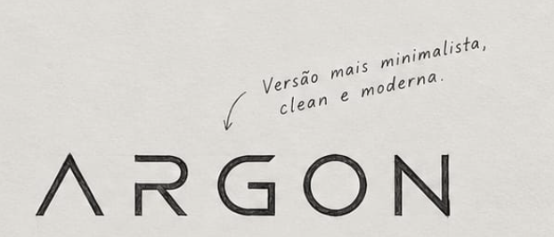
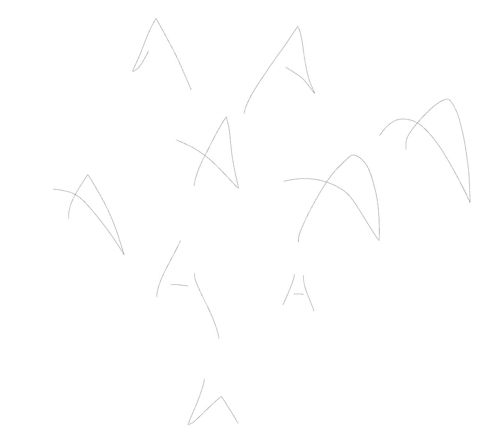

16 Núcleo Recomendada
Um átomo sólido cortado por um A vazado, com a mesma inclinação do A do ARGON. O corte divide o disco em três partes, e o A só existe no vazio. É o mais forte em tamanho pequeno e o mais próprio.
Rodada 2 · Gestalt
O argônio tem três camadas de elétrons, e a última está completa: é por isso que ele é estável. Seis símbolos nascem dessa ideia, cada um apoiado numa lei da Gestalt. O nome continua ARGON, com o A sem barra.
Rodada 2 · seis conceitos
Todos sólidos, no mesmo grid de 64 u e com peso parecido, no estilo das referências que vocês trouxeram: poucas formas, geometria precisa e o significado aparecendo no espaço vazio.
Um átomo sólido cortado por um A vazado, com a mesma inclinação do A do ARGON. O corte divide o disco em três partes, e o A só existe no vazio. É o mais forte em tamanho pequeno e o mais próprio.
Três discos iguais, quase se tocando. A proximidade faz a mente ler um só triângulo, e o vazio do centro vira o núcleo. Simples e estável, mas três círculos juntos é uma forma comum.
Três faixas iguais formam um triângulo: as três camadas de elétrons. O recorte na base transforma a pirâmide em A. Lembra marcas de pilha e perde as faixas abaixo de 24 px.
Três peças idênticas giradas em volta de um núcleo vazio. A simetria dá estabilidade; a leitura de “triângulo impossível” é forte, mas se afasta da sobriedade.
Três anéis que a mente completa apesar do corte. É o átomo mais literal e lembra os ícones de Wi‑Fi e de radar, então não recomendo.
Oito elétrons na última camada em volta do núcleo: o octeto completo que faz do argônio um gás nobre. Serve de comparação; lembra um ícone de carregamento.
Direção anterior · rodada 1f
O arco nasce fora da letra, corta a perna esquerda com uma folga e desce até o chão à direita. É o gesto de seis dos seus nove esboços, com o nome em linha fina e o A sem barra.
Direção escolhida
Da referência que vocês trouxeram ao vetor no grid, e as versões que a marca vai usar no dia a dia.


Recomendação da rodada 1 · variação 4
Quatro traços, espessura única, nenhum ornamento. O vértice se solta do corpo e deixa um respiro: é o ponto de vista de quem enxerga o todo antes de agir. A forma é pública; o significado completo fica com os sócios.
Estratégia
A Argon separa o que importa do ruído: na newsletter diária, na consultoria e, em breve, na agenda de eventos da região. A marca faz o mesmo: tira tudo o que não é essencial ao A.
Argônio é estável e não reage à toa. É a metáfora de uma consultoria sóbria, e o motivo para o minimalismo. Excitado, ele brilha em lilás: fica guardado como cor de acento para a rodada 2.
Sem azul-marinho, sem seta para cima, sem globo, sem triângulo fechado com swoosh. Do setor fica só o rigor tipográfico das consultorias, que é o que transmite seriedade.
O método veio do primeiro esboço: poucos traços e um significado privado. A forma é própria, e nenhuma variação usa traços soltos lado a lado. O briefing completo, com os pontos a validar, está em strategy.md.
Rodada 1b · leitura
São nove desenhos à mão, numerados de cima para baixo. Antes de desenhar mais, vale ver o que se repete neles.

6/9
Em seis dos nove esboços, a barra não atravessa o A: ela desce ou faz curva até encontrar uma perna no chão. Esse é o seu gesto.
Rodada 1b · novos esboços
Dois saem do seu gesto e um é invenção. Cada um aparece primeiro como esboço e depois como vetor, no mesmo grid das outras variações.
O arco nasce fora da letra, cruza a perna esquerda e deságua no pé direito, tangente a ela, como um trilho que encontra outro. O ápice pende um pouco para a direita, como nos desenhos. Leitura: muitos caminhos, uma decisão.
A barra nasce no pé esquerdo e sobe por dentro do A, sem tocar a perna direita. O encontro pesa a base, como uma raiz. Leitura: ir à raiz do problema antes de propor qualquer coisa. A diagonal termina reta, sem ponta, para não virar gráfico de crescimento.
Um bloco sólido cortado pelo A em linha fina. Como a barra não atravessa, o corte divide o bloco em exatamente três peças: esquerda, direita e centro. Leitura: três partes que só fazem sentido juntas, como as três camadas do argônio. É a mais forte em tamanho pequeno e funciona como carimbo.
Da rodada 1b, a 9 é a mais forte como marca e a 7 é a mais fiel ao seu gesto. A direção escolhida agora é a 14, no topo da página.
Rodada 1c · seus esboços
Os desenhos 1, 2, 5 e 9, com a maior fidelidade possível. Cada um aparece como você desenhou, redesenhado como esboço e como vetor no mesmo grid das outras variações.
Mantido: o A sem barra e o gancho que volta do pé esquerdo. Ajustado: o gancho ficou mais largo e se afasta da perna, para não virar uma mancha em tamanho pequeno.
Mantido: o ápice à direita, a perna direita côncava e o traço interno que encontra o pé direito. Ajustado: os dois pés apoiados na mesma base e a forma aberta embaixo, para se afastar do delta de Star Trek.
Mantido: a perna esquerda curta e o arco que nasce fora da letra e deságua no pé direito. Ajustado: no fim, o arco segue exatamente a direção da perna, e os dois viram um traço só no chão.
Mantido: o traço contínuo que desce, sobe e desce, com o início mais alto que o ápice. Ajustado: só o grid. Em tamanho pequeno ele se lê mais como N do que como A; vale como assinatura, não como símbolo principal.
Exploração
Todas as variações usam o mesmo grid e a mesma espessura, então a comparação é justa. Cada uma mostra a lei da Gestalt que usa e como se comporta em 16, 32 e 64 px.
A barra sai da perna esquerda e para antes da direita. É a versão mais discreta: em tamanho pequeno vira um A comum.
Cada traço termina numa ponta, herança direta do desenho à mão. Tem personalidade, mas o ápice fino some abaixo de 32 px.
Um ângulo e uma barra flutuante. É neutra e a mais legível em tamanho pequeno: segunda opção.
Um corte horizontal solta o vértice. É a forma mais própria das seis. Em 16 px usa a versão de tela pequena, com traço mais grosso.
Perna curva e barra em arco que cruza: o esboço original, organizado. É a mais expressiva e a menos sóbria.
O A desenhado sem tirar a caneta. É um exercício: a perna direita curta faz a letra ser lida como P, então não recomendo.
O arco dos seus esboços, organizado: nasce fora da letra, cruza a perna esquerda e deságua no pé direito.
A barra nasce no pé esquerdo e sobe por dentro do A, sem tocar a perna direita. A base fica mais pesada.
Um bloco cortado pelo A em três peças. Em 16 px usa a versão de tela pequena, com corte mais largo.
Sistema
As versões usam a marca escolhida em “Marca em teste”, no topo da página.
Tipografia
Caixa baixa e tracking levemente aberto, para um nome que fala baixo e com firmeza. Três candidatas.
Cor
A rodada 1 é monocromática: se a marca funciona em preto sobre papel, funciona em qualquer lugar. As três paletas abaixo são para a rodada 2.
* CMYK aproximado e Pantone sugerido. Validar em prova de gráfica.
#1B1D21 · #F4F4F1 · #B8893B
Sóbria e editorial. O ocre sugere valor e maturidade sem gritar.
#0F3B3A · #E9EFEC · #7FA89F
Transmite confiança e estabilidade sem o clichê do azul. Sugere crescimento sem desenhar seta.
#121019 · #F5F4F8 · #6A4DF4
A luz do próprio elemento, e ponte com o roxo que o site já usa. Só como acento.
Manual · rascunho
No mundo real
Aplicações de exemplo, com nomes e textos fictícios. Troque a marca no topo e todas mudam juntas.
Mercado & Tecnologia
O que esperar do ecossistema de inovação nos próximos trimestres?
As principais tendências em automação, investimentos de risco e as novas regulações que moldarão as decisões de tecnologia.
Café de negócios · outubro
Nome Sobrenome
Participante
Próximos passos